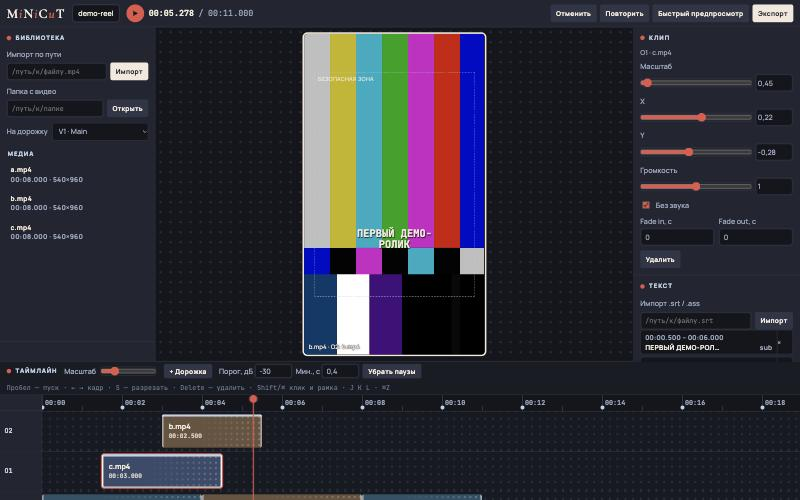

01 Что это и что умеет
Я монтирую вертикальные видео (рилсы), и нарезка со вставками съедала больше времени, чем сам ролик. Поэтому собрала небольшой редактор minicut и подключила к нему Claude. Часть работы я делаю руками на таймлайне, часть говорю словами («убери паузы, положи графику с третьей секунды»), а результат вижу сразу в том же окне.
Код открытый: берите, запускайте у себя и дорабатывайте под свои задачи. Репозиторий: github.com/natay1304/minicut.
Git: сохранения и откаты объясняет терминал и как вернуть всё назад, если что-то сломалось. GitHub: аккаунт и заливка пригодится, чтобы скачивать обновления minicut и хранить свои доработки. Фишки Claude Code про то, как работать с Claude, который будет монтировать и ставить всё за вас.

Что он умеет
- Основная дорожка с клипами и до 10 дополнительных дорожек (оверлеи) для графики, врезок и скринов.
- У каждого клипа: масштаб, положение, скорость от 0,25× до 4× (замедление и ускорение, голос не меняет высоту), громкость, выключение звука и плавное появление и затухание звука. Скорость можно поменять и у всего проекта сразу.
- Кадрирование мышью прямо на превью (кнопка «Кадрировать»: тянете стороны рамки, двигаете и приближаете картинку) и split-screen: два видео в одном кадре, верх и низ.
- Нарезка, подрезка краёв, перетаскивание, привязка к краям соседних клипов, выделение нескольких клипов сразу, отмена и повтор.
- Подписи: добавляются вручную, загружаются из готовых файлов
.srtи.assили создаются из расшифровки. У подписей своя дорожка на таймлайне: их можно двигать мышью и менять начало и конец. Настраиваются шрифт, размер, цвет и положение. - Расшифровка речи прямо на компьютере (whisper.cpp): слова с точным временем, поиск фраз, поиск повторных дублей, вырезание фрагмента по тексту. Один раз нужна установка:
npm run setup:speech(около 570 МБ для модели по умолчанию). - Удаление пауз по тишине, несколько проектов.
- Экспорт готового ролика через ffmpeg с индикатором прогресса и кнопкой «Отмена» (кодеки H.264, H.265, VP9, ProRes), подсказки пути при вводе и быстрый пробный просмотр в низком качестве.
- Панели (библиотека, свойства, таймлайн) можно растягивать мышью.
- Подключение к Claude через MCP: всё, что делает интерфейс, может делать и нейронка. Плюс то, чего в интерфейсе пока нет: Claude может посмотреть кадр и проверить монтаж, добавить на клип фильтры ffmpeg (цвет, размытие, шумоподавление) и собрать новый файл через ffmpeg (стабилизация, цветокоррекция, фоны) в безопасных рамках.
- Всё работает только на вашем компьютере: ни аккаунтов, ни облака, видео никуда не уходят.
Чего он не умеет (честно)
- Расшифровка речи требует разовой установки, а на Windows её установка автоматизирована, но на живой машине не проверялась.
- Это не замена DaVinci Resolve или CapCut: в интерфейсе нет цветокоррекции, переходов и анимации эффектов (цветовые и звуковые фильтры доступны через Claude). Это быстрый инструмент для нарезки и вставок.
- Интерфейс пока только для компьютера (мышь, широкий экран), мобильная версия не тестировалась.
- Звуковую дорожку для музыки на таймлайн пока добавить нельзя: в проект кладутся только видео.
- Проверен только на macOS. На Linux и Windows он должен работать (нужны Node и ffmpeg), но я там его не проверяла.
02 Что понадобится
| Что | Зачем | Как проверить |
|---|---|---|
| Node.js версии 20 или новее | Запускает программу | В терминале node -v |
| ffmpeg | Режет и собирает видео | ffmpeg -version |
| Git | Скачать код (можно и без него, см. шаг 2) | git --version |
| Браузер | Редактор открывается в нём | Любой современный |
| Claude (по желанию) | Чтобы монтировать вместе с нейронкой | Claude Code, Claude Desktop или Cowork |
Терминал на Mac открывается через Spotlight: ⌘ + пробел, слово «Терминал». Если не уверены, как с ним работать, начало гайда про Git объясняет это по шагам.
Быстрый путь: пусть всё настроит нейронка
Если у вас есть Claude Code, Codex, Cursor или другой помощник, который умеет запускать команды в терминале, шаги 1–5 можно не делать руками. Откройте помощника в любой папке и отправьте ему промпт ниже. Он проверит и поставит программы, скачает minicut, прогонит проверку, создаст на рабочем столе файл для запуска двойным кликом и подключит MCP. В обычном чате без доступа к компьютеру он только выдаст инструкцию, а сам ничего не сделает.
Чего промпт не делает за вас: не ставит Homebrew (для этого нужен пароль от компьютера) и не вводит пароли. В этих местах помощник остановится и скажет, что сделать.
Настрой на моём компьютере всё для программы minicut (локальный видеоредактор) и сделай так, чтобы я могла запускать её одним действием. Репозиторий: https://github.com/natay1304/minicut. Работай по шагам и после каждого шага показывай результат команд.
Правила:
- Ничего не удаляй, не используй sudo и не меняй системные настройки без моего «да».
- Если нужен пароль, остановись и скажи, что ввести мне самой. Пароли и ключи в чате не проси.
- Не трогай мои другие проекты и папки.
Шаги:
1. Определи систему (uname). Проект проверен на macOS. Если у меня Linux или Windows, скажи об этом и предложи, как адаптировать, но ничего не ставь без моего «да».
2. Проверь node -v (нужна версия 20 или новее), ffmpeg -version и git --version. Если чего-то нет, на macOS поставь через Homebrew: brew install node ffmpeg git. Если Homebrew не установлен, покажи команду установки с сайта https://brew.sh и подожди, пока я поставлю его сама.
3. Спроси, в какую папку скачать (по умолчанию ~/Documents/minicut). Если папка уже есть и не пустая, не перезаписывай её, предложи другую.
4. Выполни git clone https://github.com/natay1304/minicut.git в эту папку, затем npm install.
5. Проверь, что всё работает. Запусти сервер на свободном порту с временной папкой данных: MINICUT_DATA=$(mktemp -d) PORT=4399 node src/server.js &. Проверь curl -s -o /dev/null -w "%{http_code}" http://127.0.0.1:4399/api/project (ждём 200), затем останови сервер и убедись, что порт 4399 свободен. После этого выполни npm test: все тесты должны пройти.
6. Сделай запуск одним действием. Создай на рабочем столе файл «Запустить minicut.command»: в нём переход в папку проекта, добавление пути к node в PATH (возьми из which node), через 2 секунды открытие http://127.0.0.1:4317 в браузере и команда npm start. Сделай его исполняемым (chmod +x). Если порт 4317 уже занят, предупреди меня. Скажи, как запускать: двойным кликом по файлу.
7. Спроси, к чему подключить MCP: Claude Code, Claude Desktop и Cowork или к обоим. Выполни в папке проекта npm run mcp:install -- --code и/или npm run mcp:install -- --desktop. Для Claude Desktop напомни, что приложение нужно полностью закрыть (⌘Q) и открыть заново.
8. В конце выведи итог: какие версии установлены, в какой папке лежит minicut, как запустить, как остановить (Ctrl+C), как проверить MCP (спросить Claude: «покажи проект minicut») и что осталось сделать мне руками.
После выполнения запускайте minicut двойным кликом по файлу «Запустить minicut.command» на рабочем столе, а Claude подключится сам после перезапуска приложения.
03 Шаг 1. Установить программы (macOS)
Проще всего ставить программы на Mac через менеджер Homebrew. Если его ещё нет, возьмите команду установки на сайте brew.sh (там она всегда актуальная) и следуйте подсказкам. Потом одной командой ставим всё нужное:
brew install node ffmpeg gitПроверьте, что всё встало:
node -v # должно показать v20 или выше
ffmpeg -version
git --versionЕсли node -v показывает версию ниже 20, обновите: brew upgrade node.
04 Шаг 2. Скачать minicut
cd ~/Documents
git clone https://github.com/natay1304/minicut.git
cd minicut
npm installПервая строка переходит в папку «Документы», вторая скачивает код проекта, третья заходит в его папку, четвёртая устанавливает нужные библиотеки. Установка занимает около минуты.
Без Git: на странице репозитория нажмите зелёную кнопку Code → Download ZIP, распакуйте архив, откройте в терминале папку проекта и выполните npm install.
Нужна именно выпущенная версия: скачайте её со страницы релиза v0.3.0 (раздел Assets → Source code) или склонируйте по метке:
git clone --branch v0.3.0 https://github.com/natay1304/minicut.gitОбычный git clone без метки скачивает самую свежую версию с исправлениями.
05 Шаг 3. Запустить
npm startВ терминале появится строка minicut listening on http://127.0.0.1:4317. Откройте этот адрес в браузере: это и есть редактор.
- Окно терминала закрывать нельзя: пока оно открыто, редактор работает. Остановить его можно клавишами
Ctrl + C. - На Mac можно запускать двойным кликом по файлу
scripts/start.command. - Если порт 4317 занят, запустите на другом:
PORT=4318 npm start, и адрес будетhttp://127.0.0.1:4318.
06 Шаг 4. Первый ролик руками
Устройство экрана. Слева библиотека (файлы и папки), в центре превью, справа свойства выбранного клипа и подписи, снизу таймлайн: линейка времени, дорожки (V1 основная, O1…O10 оверлеи) и красная линия плейхеда.
- Добавьте видео. В библиотеке в поле «Импорт по пути» вставьте путь к файлу и нажмите «Импорт». Путь удобно получить так: в Finder выделить файл и нажать ⌥⌘C (скопировать как путь). Или в поле «Папка с видео» укажите папку и нажмите «Открыть»: появится список файлов.
- Положите на таймлайн. Выберите в списке «На дорожку» нужную дорожку (по умолчанию V1 · Main) и нажмите на файл в списке «Медиа». Клип появится на дорожке.
- Нарежьте. Кликните по линейке, чтобы поставить плейхед туда, где нужен разрез. Выберите клип и нажмите S. Лишний кусок выделите и нажмите Delete: на основной дорожке остальные клипы сдвинутся и дырки не останется.
- Подрежьте края. Потяните за левый или правый край клипа.
- Добавьте врезку. Нажмите «+ Дорожка», выберите новую дорожку в списке «На дорожку», добавьте клип. Перетащите его по времени, как нужно. Справа подберите масштаб и положение.
- Уберите паузы. Нажмите «Убрать паузы». Рядом две настройки: «Порог, дБ» (по умолчанию −30: чем ближе к нулю, тем больше считается тишиной) и «Мин., с» (по умолчанию 0,4: минимальная длина паузы).
- Добавьте подписи. В блоке «Текст» нажмите «Добавить подпись» или загрузите готовый
.srtили.ass. Шрифт, размер и положение настраиваются ниже, в блоке «Стиль». - Быстро проверьте. Кнопка «Быстрый предпросмотр» собирает ролик в низком качестве за несколько секунд.
- Экспортируйте. Нажмите «Экспорт», укажите, куда сохранить (например,
/Users/ваше_имя/Movies/ролик.mp4), разрешение (по умолчанию как у холста, 1080×1920), частоту кадров и качество. Прогресс виден в окне, остановить экспорт можно кнопкой «Отмена».
Горячие клавиши
| Клавиши | Что делают |
|---|---|
Пробел | Пуск и пауза |
← → | Шаг на один кадр |
S | Разрезать клип на месте плейхеда |
Delete | Удалить выбранное |
J K L | Перемотка назад, стоп, вперёд, как в профессиональных монтажках |
⌘Z и ⌘⇧Z | Отмена и повтор |
Shift или ⌘ и клик, рамка мышью | Выделить несколько клипов |
Проекты
Нажмите на название проекта слева вверху: там список проектов, поле «Имя», кнопки «Новый» и «Сохранить как». Проект сохраняется сам после каждого изменения. Файлы лежат в папке data/projects внутри minicut.
07 Шаг 5. Подключить Claude через MCP
Зачем. Подключив minicut как MCP-сервер, вы даёте Claude «ручки» для монтажа: он может импортировать файлы, резать, двигать, добавлять подписи и собирать ролик. Вы смотрите результат в браузере вживую и можете в любой момент вмешаться руками. Что такое MCP вообще, мы разбирали отдельно; здесь только то, что нужно для minicut.
В проекте есть готовый скрипт, который сам подставляет нужные пути.
Claude Code (терминал)
В папке minicut выполните:
npm run mcp:install -- --codeОткройте новую сессию Claude Code: инструменты minicut появятся в списке.
Claude Desktop и Cowork
В папке minicut выполните:
npm run mcp:install -- --desktopСкрипт допишет настройку в конфиг Claude Desktop (рядом останется копия старого файла с суффиксом .bak-before-minicut) и подскажет, что делать дальше: полностью закройте приложение (⌘Q) и откройте снова. Просто закрыть окно недостаточно.
Другая программа с поддержкой MCP
Выполните npm run mcp:install без параметров. Скрипт покажет готовый блок настроек с вашими путями, который можно вставить в конфиг. Запускаемая команда: node /путь/к/minicut/src/mcp.js, тип подключения stdio.
Программы вроде Claude Desktop не видят то, что установлено через nvm, поэтому скрипт записывает полный путь к node. Если потом смените версию Node, просто запустите npm run mcp:install снова.
Проверка подключения
Проще всего вопросом в чате: «покажи проект minicut». Если Claude отвечает списком клипов и дорожек, всё работает.
Нужно ли отдельно запускать npm start? Нет. MCP сам поднимает редактор, если он не запущен (но остановится вместе с программой Claude). Если хотите, чтобы редактор жил отдельно, запустите npm start заранее: MCP подключится к уже работающему.
08 Шаг 6. Попросить Claude смонтировать
Откройте в браузере http://127.0.0.1:4317 и в чате Claude напишите задачу обычным языком. Примеры:
Покажи, что сейчас в проекте minicut.
Импортируй /Users/ваше_имя/Movies/talk.mp4, убери паузы и положи на основную дорожку.
Добавь поверх с 3-й секунды файл /Users/ваше_имя/Movies/graphic.webm на вторую дорожку, масштаб 0.5, в правый верхний угол.
Загрузи субтитры из /Users/ваше_имя/Movies/talk.srt и подними их выше.
Собери быстрый предпросмотр.
Что важно знать:
- Пишите полные пути к файлам, как их показывает Finder (⌥⌘C).
- Изменения Claude появляются в браузере сразу. Можно работать вместе: Claude режет, вы двигаете.
- Финальный экспорт Claude делает только когда вы скажете «собирай».
- Любое действие можно отменить: ⌘Z в браузере или просьба «отмени последнее».
- Лучше давать задачи небольшими шагами и смотреть результат, чем просить «смонтируй всё».
Что умеет Claude (инструменты)
| Группа | Инструменты |
|---|---|
| Проект | get_project, list_projects, new_project, load_project, save_project_as, set_canvas |
| Файлы | import_media |
| Клипы | add_clip, split, trim, remove_clip, remove_clips, move_clip, move_clip_to_track, set_clip, set_clips (масштаб, положение, область кадра, скорость, фильтры ffmpeg, громкость, затухания) |
| Скорость | scale_speed (ускорить или замедлить весь проект вместе с подписями и оверлеями) |
| Речь | speech_status, transcribe, get_transcript, find_in_transcript, find_repeats, cut_source_range, subtitles_from_transcript |
| Посмотреть и проверить | get_frame (кадр проекта как в экспорте), get_media_frame (кадр исходника), probe (данные файла), ffmpeg_help (что умеет ваш ffmpeg) |
| ffmpeg | ffmpeg_run: собрать новый файл (стабилизация, цвет, генерация фонов, конвертация). Только в разрешённых папках, без сети, без перезаписи исходников |
| Дорожки | add_overlay_track, remove_overlay_track |
| Паузы | detect_silence, remove_silence |
| Подписи | add_text, set_text, remove_text, set_style, import_subtitles, import_transcript |
| История | undo, redo |
| Выдача | preview, render, cancel_render |
09 Безопасность
- Редактор слушает только ваш компьютер (
127.0.0.1) и отвергает запросы со сторонних сайтов. Не пробрасывайте его порт в интернет (через туннели и прокси): у него нет пароля. - Импортировать и сохранять можно только внутри домашней папки и временной. Скрытые папки (
.ssh,.config) закрыты. Если нужна другая папка, добавьте её в переменнуюMINICUT_ROOTS. - Нейронка видит только то, что вы ей даёте: пути к видео и параметры монтажа. Если вы разрешите ей произвольные команды в терминале, это уже настройки самой программы.
10 Если что-то не работает
| Что случилось | Что делать |
|---|---|
command not found: npm или node | Не установлен Node.js. Шаг 1: brew install node. |
ffmpeg: command not found или экспорт сразу падает | Не установлен ffmpeg: brew install ffmpeg. |
| Редактор не открывается | Проверьте, что в терминале есть строка minicut listening, и откройте именно http://127.0.0.1:4317. Если порт занят, запустите с PORT=4318. |
| «Видеофайл вне разрешённых папок» | Файл лежит вне домашней папки (например, на внешнем диске). Запустите с MINICUT_ROOTS="/Volumes/Диск:$HOME" npm start. |
| Подписи в экспорте не того шрифта | Встроены три шрифта: Cormorant, Manrope и JetBrains Mono. Если в стиле подписи указан другой, программа попробует найти его в системе, а не найдя, подставит JetBrains Mono. |
| У Claude нет инструментов minicut | Приложение не перезапущено полностью (⌘Q), или в конфиге нет полного пути к node. Запустите npm run mcp:install -- --desktop ещё раз и перезапустите приложение. |
| Claude пишет «server is not reachable» | Порт 4317 занят чужой программой или сервер упал. Проверьте командой lsof -i :4317. |
| Изменения Claude не видны в браузере | Обновите страницу и проверьте, что открыт тот же порт. |
11 Чек-лист
node -vпоказывает 20 или выше,ffmpeg -versionработает.- Код скачан,
npm installпрошёл без ошибок. npm startзапущен, в браузере открываетсяhttp://127.0.0.1:4317.- Добавлен первый клип, ролик экспортирован.
- Для Claude: выполнено
npm run mcp:install -- --codeили--desktop, приложение перезапущено. - Claude отвечает на «покажи проект minicut» списком клипов.
12 Частые вопросы
- Это платно?
- Нет. Программа бесплатная и с открытым кодом (лицензия MIT). Платить может понадобиться только за подписку на Claude, если вы хотите работать через него.
- Можно ли без Claude?
- Да, это обычный редактор. MCP нужен, только если хотите монтировать вместе с нейронкой.
- Можно ли пользоваться другой нейронкой?
- Да, любой программой с поддержкой MCP. Подключается так же, см. шаг 5, последний вариант.
- Хочу доработать под себя
- Репозиторий открыт: github.com/natay1304/minicut. Структура описана в
docs/ARCHITECTURE.md, список операций вdocs/API.md. Для разработки есть тесты (npm test) и линтер. Идеи и ошибки можно писать в Issues на GitHub. Если не пользовались GitHub, начните с гайда про GitHub. - Как обновить?
- Если клонировали обычным
git clone, в папке minicut выполнитеgit pull, затемnpm install. Если брали версию по метке или ZIP, скачайте новую версию со страницы релизов.